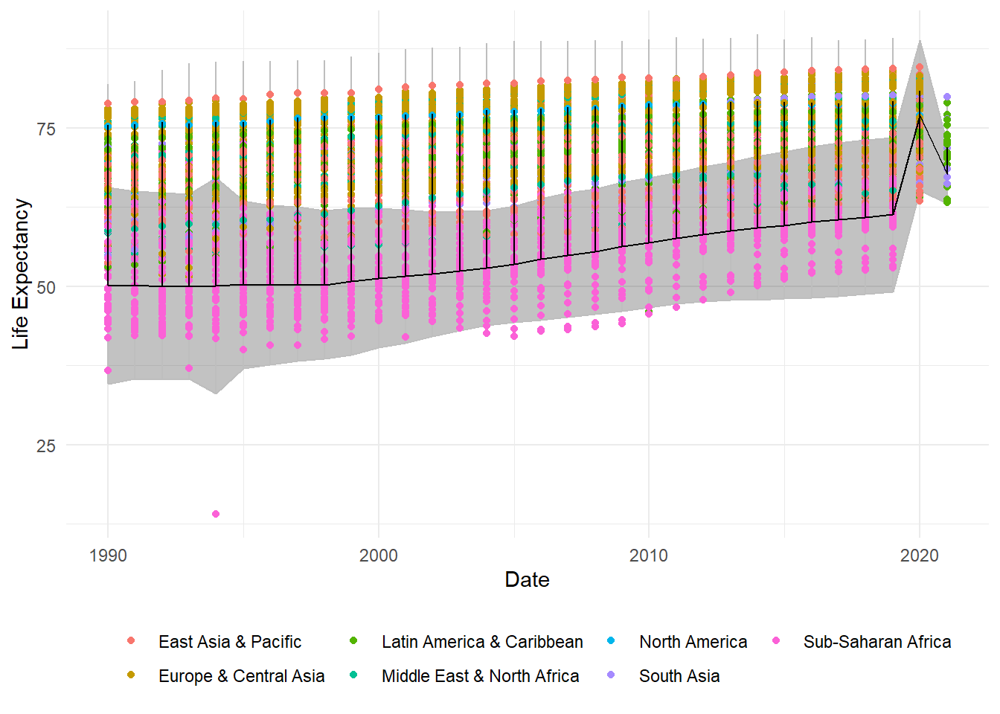
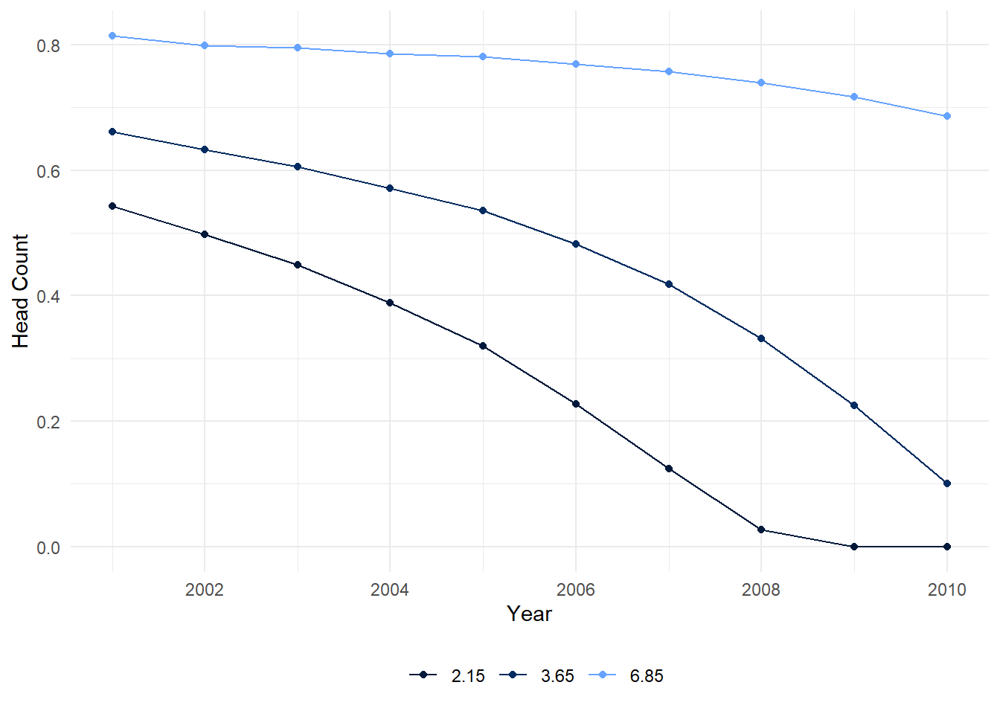
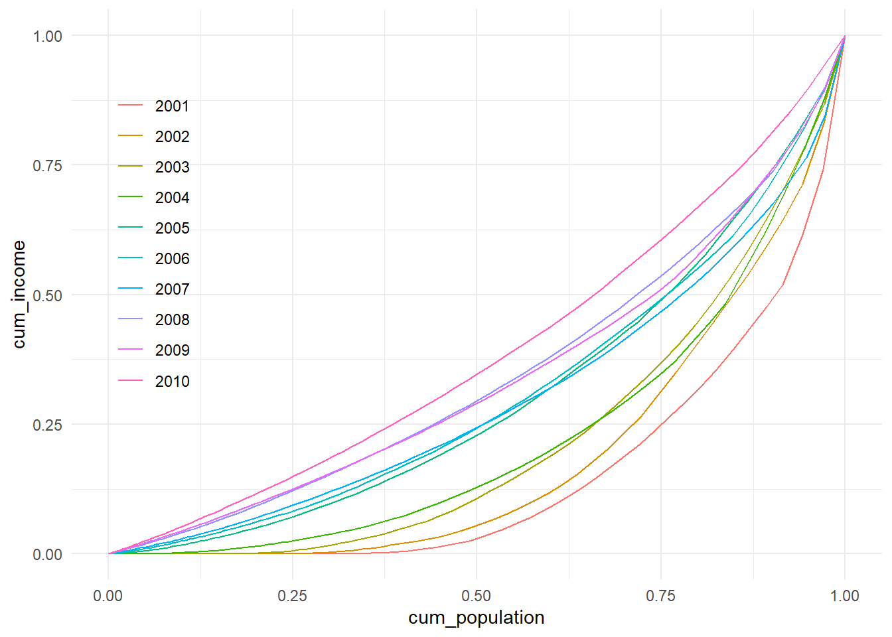
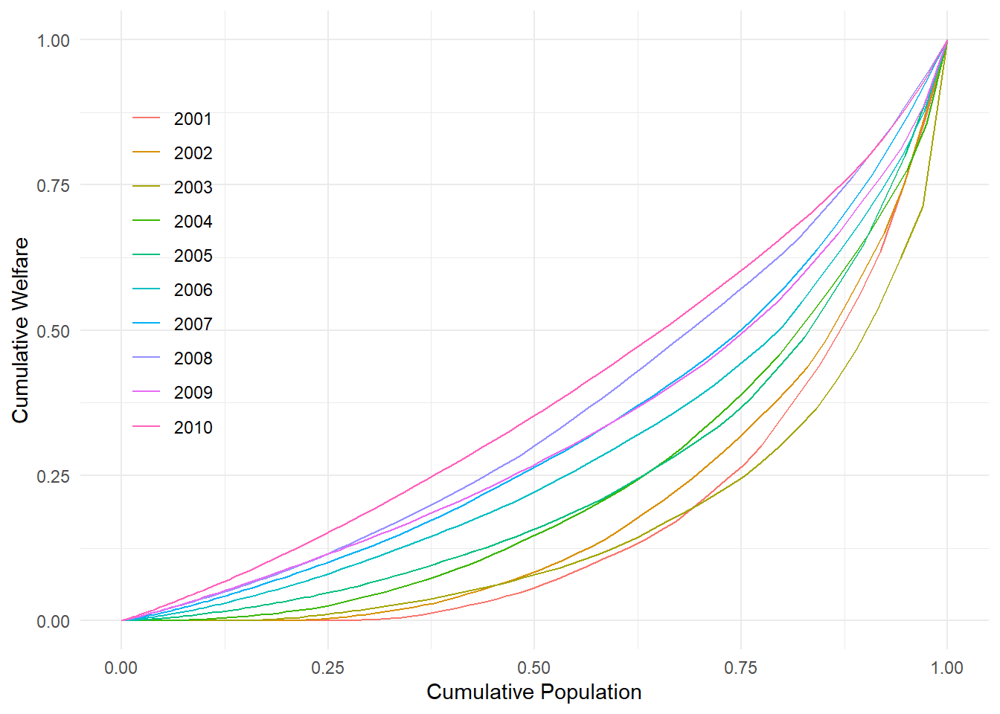
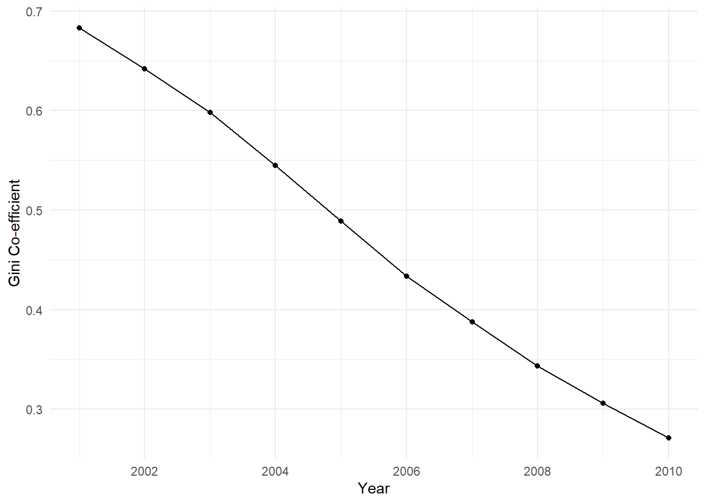

knitr::opts_chunk$set(message=FALSE, warning=FALSE, fig.align="left", fig.pos="H", digits=2)R Skills Assignment
library(tidyverse)
library(knitr)
library(kableExtra)tag <- "202311081903"
base_url <- "https://github.com/randrescastaneda/pub_data/raw/"
data_url <- paste0(base_url, tag, "/data/Rtest1/")
options(scipen = 999) # to ensure numbers don't print in scientific notation
options(digits=1)Basic Statistics
Import Data
wdi <- readr::read_rds(paste0(data_url, "wdi_in1.Rds"))Define Commonly Called on Functions
weighted_mean <- function(x, weights) {
sum(x * weights, na.rm = TRUE) / sum(weights, na.rm = TRUE)
}
weighted_sd <- function(x, weights) {
mean_value <- weighted_mean(x, weights)
sqrt(sum(weights * (x - mean_value)^2, na.rm = TRUE) / sum(weights, na.rm = TRUE))
}Summary Statistics of GDP per Capita by Region
Functions
# Cannot figure out why I get 44 observations in SSA here instead of 42
summary<- function(data,x,weights){
summary <-
data %>%
group_by(date, region) %>%
summarise(
n = n(),
mean = weighted_mean(.data[[x]], .data[[weights]]),
sd = weighted_sd(.data[[x]], .data[[weights]]),
median = median(.data[[x]], .data[[weights]], na.rm = TRUE),
min = min(.data[[x]], na.rm = TRUE), #no extra steps for weighting as per capita already considers pop size
max = max(.data[[x]], na.rm = TRUE) # weighting not performed, as with min
) %>%
arrange(region, date)
summary
}Printing Results
summary(data= wdi %>%
select(region, date, country, gdp, pop),
x="gdp",
weights="pop") %>%
head(10) %>%
knitr::kable("html") %>%
kable_styling("striped", full_width = FALSE) | date | region | n | mean | sd | median | min | max |
|---|---|---|---|---|---|---|---|
| 1990 | East Asia & Pacific | 22 | 4913 | 8496 | 3526 | 582 | 32846 |
| 1991 | East Asia & Pacific | 22 | 5105 | 8691 | 3458 | 579 | 33870 |
| 1992 | East Asia & Pacific | 22 | 5291 | 8667 | 3527 | 597 | 34049 |
| 1993 | East Asia & Pacific | 22 | 5483 | 8576 | 3753 | 635 | 33783 |
| 1994 | East Asia & Pacific | 22 | 5740 | 8619 | 3840 | 669 | 34054 |
| 1995 | East Asia & Pacific | 22 | 6037 | 8796 | 3881 | 708 | 34868 |
| 1996 | East Asia & Pacific | 22 | 6340 | 9011 | 3878 | 746 | 35879 |
| 1997 | East Asia & Pacific | 22 | 6538 | 9045 | 3731 | 782 | 36145 |
| 1998 | East Asia & Pacific | 22 | 6449 | 8823 | 3770 | 816 | 36099 |
| 1999 | East Asia & Pacific | 22 | 6635 | 8836 | 3764 | 875 | 37476 |
Question 2
Functions
aggregating_statistics <- function(data, x, weights) {
results <- data %>%
group_by(date, region) %>%
summarise(
mean = weighted_mean(.data[[x]], .data[[weights]]),
sd = weighted_sd(.data[[x]], .data[[weights]]),
median = median(.data[[x]], .data[[weights]], na.rm = TRUE),
min = min(.data[[x]], na.rm = TRUE),
max = max(.data[[x]], na.rm = TRUE)
) %>%
arrange(region, date) %>%
pivot_longer(
cols = starts_with(c("mean", "sd", "median", "min", "max")),
names_to = "statistic",
values_to = "value"
)
results
}collating_table <- function(data, variables) {
results_list <- list()
pop<-
data %>%
group_by(region,date) %>%
summarise(pop=sum(pop))
for (variable in variables) {
results_list[[variable]] <- aggregating_statistics(data, x = variable, weights = "pop")
}
result_table <-
bind_rows(results_list, .id = "variable") %>%
left_join(pop, by=c("region","date")) %>%
pivot_wider(names_from = variable, values_from = value)
result_table
}Printing Results
options(digits=5)
collating_table(data= wdi %>%
select(region, date, iso3c, lifeex, pov_intl, gdp, pop),
variables= c("gdp", "lifeex", "pov_intl")) %>%
select(statistic,region,date,pop,lifeex,gdp,pov_intl) %>%
head(10) %>%
knitr::kable("html") %>%
kable_styling("striped", full_width = FALSE) | statistic | region | date | pop | lifeex | gdp | pov_intl |
|---|---|---|---|---|---|---|
| mean | East Asia & Pacific | 1990 | 1754166013 | 68.1977 | 4913.10 | 0.58970 |
| sd | East Asia & Pacific | 1990 | 1754166013 | 3.9943 | 8496.54 | 0.25412 |
| median | East Asia & Pacific | 1990 | 1754166013 | 66.2920 | 3525.97 | 0.12335 |
| min | East Asia & Pacific | 1990 | 1754166013 | 53.7130 | 581.61 | 0.00480 |
| max | East Asia & Pacific | 1990 | 1754166013 | 78.8371 | 32846.39 | 0.95210 |
| mean | East Asia & Pacific | 1991 | 1779284317 | 68.4173 | 5105.01 | 0.57318 |
| sd | East Asia & Pacific | 1991 | 1779284317 | 3.9612 | 8690.76 | 0.24571 |
| median | East Asia & Pacific | 1991 | 1779284317 | 66.7535 | 3458.54 | 0.11493 |
| min | East Asia & Pacific | 1991 | 1779284317 | 54.4600 | 579.38 | 0.00480 |
| max | East Asia & Pacific | 1991 | 1779284317 | 79.0368 | 33870.37 | 0.95152 |
Question 3 Finding Outliers
This one threw me for a loop for some reason, and when I tried to use Q2, it just wouldn’t work out.
There is an error here somewhere, but please see my proposed solution below:
Functions
outliers<-function(){
outliers<-wdi %>%
select(date,region,country,gdp,pop,lifeex,gini) %>%
pivot_longer(cols = c("gdp", "lifeex", "gini"),
names_to = "indicator",
values_to = "value") %>%
group_by(date,region,indicator) %>%
mutate(mean=weighted_mean(value,pop),
sd=weighted_sd(value,pop),
upper=mean+2.5*(sd),
lower=mean-2.5*(sd),
outlier=ifelse(value<=upper,
(ifelse(value<=lower,"outlier","inlier")),"outlier"))
outliers
}Printing Results
outliers() %>%
filter(outlier=="outlier") %>%
head(10) %>%
knitr::kable("html") %>%
kable_styling("striped", full_width = FALSE)| date | region | country | pop | indicator | value | mean | sd | upper | lower | outlier |
|---|---|---|---|---|---|---|---|---|---|---|
| 2000 | Sub-Saharan Africa | Angola | 16394062 | gini | 52 | 8.2681 | 17.191 | 51.247 | -34.71 | outlier |
| 1990 | Middle East & North Africa | United Arab Emirates | 1900151 | gdp | 105894 | 7121.9351 | 9113.908 | 29906.706 | -15662.84 | outlier |
| 1991 | Middle East & North Africa | United Arab Emirates | 2008383 | gdp | 101049 | 6947.6553 | 8946.520 | 29313.956 | -15418.65 | outlier |
| 1992 | Middle East & North Africa | United Arab Emirates | 2116231 | gdp | 99107 | 7074.7976 | 8860.705 | 29226.561 | -15076.97 | outlier |
| 1993 | Middle East & North Africa | United Arab Emirates | 2223284 | gdp | 95524 | 7021.0439 | 8613.092 | 28553.773 | -14511.69 | outlier |
| 1994 | Middle East & North Africa | United Arab Emirates | 2329024 | gdp | 97476 | 7065.9297 | 8870.029 | 29241.002 | -15109.14 | outlier |
| 1995 | Middle East & North Africa | United Arab Emirates | 2433988 | gdp | 99510 | 7716.6344 | 9542.904 | 31573.894 | -16140.63 | outlier |
| 1996 | Middle East & North Africa | United Arab Emirates | 2572735 | gdp | 99603 | 8030.6772 | 9708.297 | 32301.421 | -16240.07 | outlier |
| 1997 | Middle East & North Africa | United Arab Emirates | 2746119 | gdp | 100957 | 8191.6196 | 9998.531 | 33187.947 | -16804.71 | outlier |
| 1998 | Middle East & North Africa | United Arab Emirates | 2921130 | gdp | 95185 | 8449.8677 | 9579.049 | 32397.490 | -15497.75 | outlier |
Printing Graph
outliers() %>%
filter(indicator=="lifeex") %>%
ggplot()+
geom_ribbon(aes(x=date,
ymin=mean-2.5*(sd),
ymax=mean+2.5*(sd),
xmin=first(date),
xmax=last(date)),
colour="grey", alpha=0.3)+
geom_point(aes(x=date,y=value,color=region))+
geom_line(aes(x=date, y=mean))+
labs(x="Date",
y="Life Expectancy")+
theme_minimal()+
theme(legend.position="bottom",
legend.title=element_blank())
Poverty Measures
Reading in Data
data <- readr::read_rds(paste0(data_url, "svy_sim_in1.Rds")) %>%
bind_rows(.id = "year") %>%
mutate(year = as.numeric(substring(year, 2)))Question 4
Key Functions
measuring_poverty<-function(x){
measuring_poverty<-data %>%
mutate(poor=ifelse(income<=x,1,0)) %>%
group_by(year) %>%
summarise(pov_line=x,
headcount=sum(poor*weight)/sum(weight),
povgap=(sum(ifelse(income<=x,((x-income)/x)*weight,0)))/sum(weight),
povseverity=(sum(ifelse(income<=x,(((x-income)/x)^2)*weight,0)))/sum(weight),
)
measuring_poverty
}Printing Results
poverty_levels <- c(2.15, 3.65, 6.85)
poverty_measures <- data.frame()
for (level in poverty_levels) {
result <- measuring_poverty(level)
poverty_measures<- bind_rows(poverty_measures, result)
}
poverty_measures %>%
head(10) %>%
knitr::kable("html") %>%
kable_styling("striped", full_width = FALSE) | year | pov_line | headcount | povgap | povseverity |
|---|---|---|---|---|
| 2001 | 2.15 | 0.54223 | 0.42284 | 0.37986 |
| 2002 | 2.15 | 0.49785 | 0.36131 | 0.31292 |
| 2003 | 2.15 | 0.44951 | 0.29498 | 0.24076 |
| 2004 | 2.15 | 0.38913 | 0.21627 | 0.15756 |
| 2005 | 2.15 | 0.31918 | 0.13428 | 0.07730 |
| 2006 | 2.15 | 0.22691 | 0.06553 | 0.02660 |
| 2007 | 2.15 | 0.12379 | 0.02140 | 0.00540 |
| 2008 | 2.15 | 0.02737 | 0.00199 | 0.00022 |
| 2009 | 2.15 | 0.00000 | 0.00000 | 0.00000 |
| 2010 | 2.15 | 0.00000 | 0.00000 | 0.00000 |
Graphing Results
poverty_measures %>%
mutate(year = as.Date(paste0(year, "-01-01")),
pov_line=factor(pov_line)) %>%
ggplot() +
geom_point(aes(x=year,y=headcount,colour=pov_line))+
geom_line(aes(x=year,y=headcount,colour=pov_line))+
labs(x="Year",
y="Head Count")+
theme_minimal()+
scale_colour_manual(values=c("#00193a", "#002b60", "#66a3ff"))+
theme(legend.position="bottom", legend.title=element_blank())
Question 5
Hello! Here’s my attempt. I’ve never coded Lorenz curves before. Ithink the maths is right, as my Gini co-efficients work out at the end, but I know I am missing something with the 100 points. I don’t think I understand the question well enough. I’ve got too many rows in my table, and I am assuming the 100 points line is intended to speed up the process. I’m presenting the computationally intensive code, then a sampling based code afterwards.
Please see attempt below.
Functions
lorenz<-function(){
lorenz <-data%>%
group_by(year) %>%
arrange(income) %>%
mutate(cum_income=cumsum(income*weight)/sum(income*weight),
cum_population=cumsum(weight)/sum(weight))
lorenz
}Printing Results
lorenz() %>%
head(10) %>%
knitr::kable("html") %>%
kable_styling("striped", full_width = FALSE) | year | income | weight | area | cum_income | cum_population |
|---|---|---|---|---|---|
| 2001 | 0 | 1 | urban | 0 | 0 |
| 2001 | 0 | 1 | rural | 0 | 0 |
| 2001 | 0 | 1 | urban | 0 | 0 |
| 2001 | 0 | 1 | urban | 0 | 0 |
| 2001 | 0 | 1 | urban | 0 | 0 |
| 2001 | 0 | 1 | urban | 0 | 0 |
| 2001 | 0 | 1 | urban | 0 | 0 |
| 2001 | 0 | 1 | urban | 0 | 0 |
| 2001 | 0 | 1 | urban | 0 | 0 |
| 2001 | 0 | 1 | urban | 0 | 0 |
Graphing Results
lorenz() %>%
ggplot() +
geom_line(aes(x = cum_population,
y = cum_income,
group = year,
color = as.factor(year))) +
labs(x="Cumulative Population",
y="Cumulative Welfare")+
theme_minimal()+
theme(legend.position=c(0.10,0.60),
legend.title=element_blank())
Question 5 (Alternative)
Functions
This is also not quite right, but shows code based on taking a random sample from the population to calculate the Lorenz curve.
set.seed=(123)
lorenz_2<-function(){
sample_data <- data %>%
group_by(year) %>%
slice_sample(n = 100, replace = FALSE)
lorenz <-sample_data%>%
group_by(year) %>%
arrange(income) %>%
mutate(cum_income=cumsum(income*weight)/sum(income*weight),
cum_population=cumsum(weight)/sum(weight)) %>%
arrange(cum_population)
lorenz
}Printing Results
lorenz_2() %>%
head(10) %>%
knitr::kable("html") %>%
kable_styling("striped", full_width = FALSE) | year | income | weight | area | cum_income | cum_population |
|---|---|---|---|---|---|
| 2010 | 2.7717 | 1 | urban | 0.00001 | 0.00003 |
| 2009 | 2.2260 | 2 | urban | 0.00002 | 0.00006 |
| 2008 | 1.6344 | 4 | urban | 0.00002 | 0.00011 |
| 2010 | 2.8514 | 8 | urban | 0.00008 | 0.00023 |
| 2007 | 1.0697 | 8 | urban | 0.00005 | 0.00026 |
| 2009 | 2.2800 | 7 | rural | 0.00011 | 0.00029 |
| 2008 | 1.6697 | 7 | urban | 0.00007 | 0.00030 |
| 2005 | 0.0000 | 11 | rural | 0.00000 | 0.00032 |
| 2010 | 2.8667 | 10 | urban | 0.00018 | 0.00049 |
| 2008 | 1.6778 | 8 | urban | 0.00012 | 0.00052 |
Graphing Results
lorenz_2() %>%
ggplot() +
geom_line(aes(x = cum_population,
y = cum_income,
group = year,
color = as.factor(year))) +
labs(x="Cumulative Population",
y="Cumulative Welfare")+
theme_minimal()+
theme(legend.position=c(0.10,0.60),
legend.title=element_blank())
Question 6
Functions
gini<-function(){
gini_coefficient <- lorenz() %>%
group_by(year) %>%
summarise(gini = 1 - 2 * integrate(Vectorize(approxfun(cum_population, cum_income)), 0, 1)$value)
gini_coefficient
}Printing Results
gini() %>%
head(10) %>%
knitr::kable("html") %>%
kable_styling("striped", full_width = FALSE) | year | gini |
|---|---|
| 2001 | 0.68297 |
| 2002 | 0.64211 |
| 2003 | 0.59830 |
| 2004 | 0.54481 |
| 2005 | 0.48900 |
| 2006 | 0.43349 |
| 2007 | 0.38742 |
| 2008 | 0.34311 |
| 2009 | 0.30581 |
| 2010 | 0.27083 |
Graphing Results
gini() %>%
mutate(year = as.Date(paste0(year, "-01-01"))) %>%
ggplot(aes(x=year,y=gini))+
geom_line()+
geom_point()+
labs(x="Year",
y="Gini Co-efficient")+
theme_minimal()